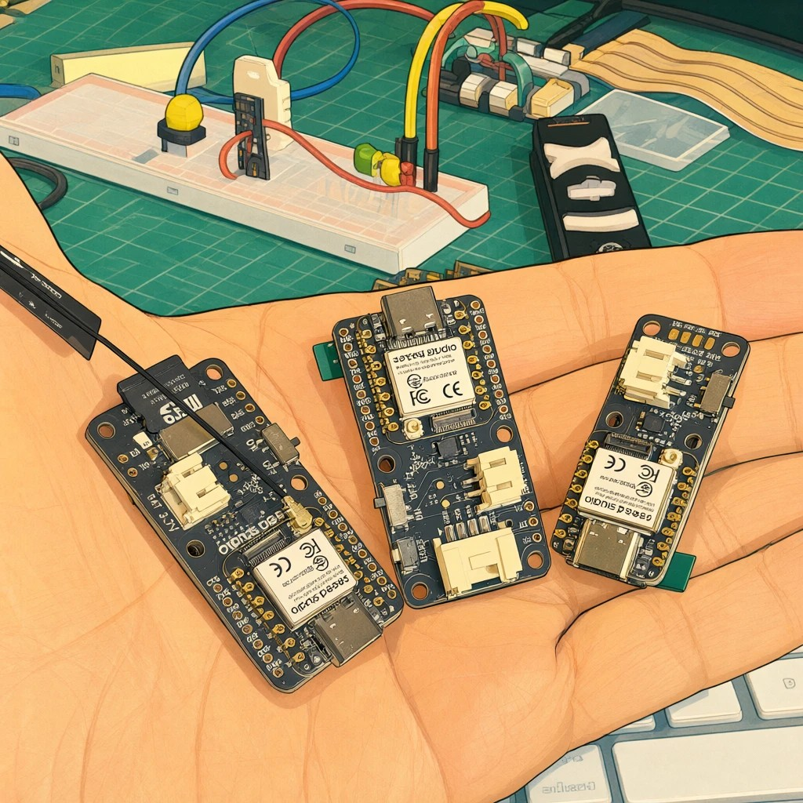

Choosing a Board and Adapting the Projects

Overview
The XIAO IPS Display family has three boards that look alike but are not the same. They share the brain, a XIAO ESP32-S3 Plus, and they differ in the screen and in what is around it: touch, a microSD slot, a Grove connector, and the number of buttons. Those differences decide which projects of this book run as written and which need changes.
This is a short chapter. It does not repeat the tests: it tells you what is different, where to find the details of each board, and what to change in a project to move it from one board to another.
- Tell the three XIAO IPS Display boards apart
- Know where each board is documented, in the Seeed Wiki
- Know which projects of the book need which feature of the board
- Follow a checklist to adapt a sketch from one board to another
Everything measured in this book was measured on one board, the 1.47” IPS Touch Display. The 1.14” and 0.96” boards were not available, so what this chapter says about them comes from Seeed’s launch material and from reasoning about the differences. Where it matters, the text says which is which. If you have one of those boards, the checklist below is how to find out the rest.
The three boards side by side
| 1.47” IPS Touch | 1.14” IPS | 0.96” IPS | |
|---|---|---|---|
| Resolution | 172 x 320 | 135 x 240 | 80 x 160 |
| Display driver | JD9853A | ST7789 | ST7789 |
| Capacitive touch | Yes | No | No |
| microSD slot | Yes | No | No |
| Grove I2C connector | No | Yes | No |
| User buttons | 2 | 3 | 2 |
| Tested in this book | Yes | No | No |
All three share the XIAO ESP32-S3 Plus (dual-core at 240 MHz, 8 MB of PSRAM, 16 MB of flash, Wi-Fi and Bluetooth LE), a 6-axis IMU, a PDM microphone, and a LiPo battery connector with voltage sensing. These figures come from Seeed’s launch material. On the 1.47” board we confirmed the IMU (an LSM6DS3TR-C), the microphone, and the PSRAM (about 8 MB free once it is enabled). The battery reading is not validated yet.
Three things in the table matter most for the projects:
- The screen is much smaller on the other two. All the screens of this book were laid out for 172 x 320 pixels. At text size 2, a line holds 14 characters on the 1.47” board, 11 on the 1.14”, and only 6 on the 0.96”.
- Only the 1.47” board has touch and a microSD slot. The sketches of this book use both: touch to choose a class, and the card to store data and, in Part 3, the model.
- The 1.14” board has a third button and a Grove connector. The button is a free input. The connector is a standard I2C socket for Grove modules; we did not try one.
Where each board is documented
The Seeed Wiki is the reference for each board: the pin map, the display and touch setup, and the example sketches. Use the page of your board, and use the product page for the labeled diagram of the board, which we do not reproduce here.
| Board | Seeed Wiki | Product page |
|---|---|---|
| 1.47” IPS Touch | Getting started | 1.47” touch display |
| 1.14” IPS | Getting started | 1.14” display |
| 0.96” IPS | Getting started | 0.96” display |
On the Wiki page of your board, look for four things: the pins of the display, the buttons, and the microphone; the display library and its configuration for that panel; the example sketches; and the notes on the microSD card, if the board has a slot.
What each project of the book needs
| Project | It needs | 1.47” touch | 1.14” | 0.96” |
|---|---|---|---|---|
| Motion classification | the IMU, a way to collect data | Done, with CSV files on the card | Same IMU; collect over USB | Same IMU; collect over USB |
| Keyword spotting | the microphone, a way to collect clips | Done, with the microphone and the card | Same microphone; collect over USB | Same microphone; collect over USB |
| Image classification and object detection | a camera | Not possible: the board has no camera | No camera in the launch material | No camera in the launch material |
| Tiny language model | PSRAM, a place for the 1 MB of weights | Done, weights on the card | PSRAM is shared; weights need another place | PSRAM is shared; weights need another place |
How to read the table: “Done” means we ran it on that board. “Same IMU” and “Same microphone” mean that Seeed lists the same part on all three boards; we did not check it on the other two. “Collect over USB” is the method of the book’s own chapters: send the data to the computer instead of writing it to a card, with the Edge Impulse data forwarder or a serial capture. For the models themselves, nothing changes: a model trained for the 1.47” board is a model of IMU or microphone data, and it does not know what screen is on the board.
What changes in each project
- Motion. The logger of Part 2 writes CSV files to the card. Without a card, send the same lines over the serial port and save them on the computer, or use the Edge Impulse data forwarder. The inference sketch needs only the IMU and a screen; adapt the screen, as described below.
- Keyword spotting. The recorder of this book also saves clips on the card. Without it, stream the audio to the computer, record there, and upload. The inference sketch needs the microphone and a screen. The model needs ESP-NN turned off on core 3.3.12 (see the problem we found); check that again if you change the core.
- The language model. The sketch loads the weights from the card. With no card, the weights must live in the flash of the board (it has 16 MB), in a partition or in the program itself. This is a change in how the file is read, not in the model. The PSRAM must be enabled in the board options.
- Image projects. They need a camera, and these boards do not have one. Use the XIAOML Kit or the Grove Vision AI V2 chapters of this book for them.
Adapting a sketch, step by step
Use these steps on a board that was not tested, in this order. Each step is a test of Part 1 or a small change.
- Scan the I2C bus (test 00). It lists the IMU and, on the 1.47” board, the touch controller. The address of the IMU tells you which library and which settings to use.
- Get the display running (the first sketch, “Hello”). This is the step that depends most on the board. The 1.14” and 0.96” boards use the ST7789 panel, not the JD9853A of the 1.47” board, so the board and driver headers of the display library are different. Take them from the example of your board in the Seeed Wiki.
- Check the speed of drawing. On the 1.47” board the library draws very slowly, and a patch and a rule (draw into a sprite, push it once) fixed it. We did not measure the other panels; run the drawing benchmark sketch of the repository before you decide you need the patch.
- Rescale the layout. Every sketch of this book assumes 172 x 320 pixels. Use the width and height that the display reports instead of fixed numbers, and cut the content to fit: fewer bars, shorter words, a smaller text size.
- Replace the touch. Where a sketch asks for a touch (choosing a class, pressing START), use the user buttons. Find their pins in the Wiki; on the 1.47” board they are D19 and D15, and they read low when pressed.
- Find the microphone pins. On the 1.47” board the PDM microphone is on D0 (clock) and D1 (data). Check the Wiki for your board before you run the audio sketches.
- Decide where the data lives. With a card, keep the project as written. Without one, move the data to the serial port or to the flash, as described above.
- Check the result the way we did. The tests of this book compare the board with a second implementation: a replay of recorded clips for the keyword model, and a Python version for the language model. Do the same after any change, because a change of board or library can give wrong answers without any error.
What we did not test
All of the above for the 1.14” and 0.96” boards: the pins of the display, the buttons, and the microphone; the behavior of the ST7789 panel with the display library; the speed of drawing; and any use of the Grove connector. If you test one of them, the steps above are the way to do it, and a test sheet like the ones in Part 1 is a good way to report what you find.